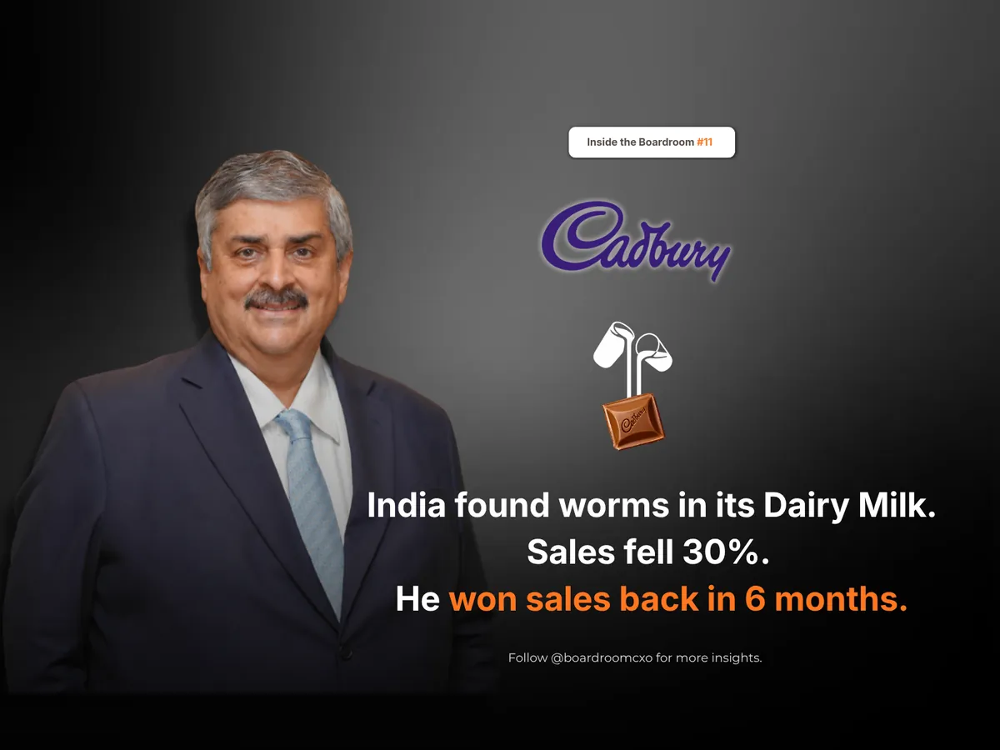

Key Takeaways
- In October 2003, Maharashtra's FDA seized Cadbury Dairy Milk stock over worm complaints, and festival-season sales fell 30 percent weeks before Diwali.
- Despite a clean chit for its plants, Bharat Puri had Cadbury spend ₹12 to 15 crore on a sealed double wrap that reached shelves by January 2004.
- Reputation is rebuilt by paying for something you did not break, which is why Cadbury absorbed the higher packaging cost instead of passing it on.
In October 2003, Cadbury India's senior team was at a hotel in Bangkok for its annual budget meeting when the call came. CNBC was running a story about worms in Dairy Milk bars.
It had been their best year ever.
On 3 October, Maharashtra's Food and Drug Administration had seized Cadbury stock from shops across the state after complaints from Mumbai and Pune. Diwali was weeks away and Cadbury was supplying about 650,000 retailers across India. It held about 70 percent of the Indian chocolate market and sold about a million bars a day. Festival-season sales fell 30 percent.
Bharat Puri had been Managing Director for about a year. He later recalled the rule he gave his team: "Anybody can fall down. It is all about how quickly we get up."
The Facts Were on Cadbury's Side. That Was Not Enough.
The Maharashtra FDA gave Cadbury's two plants in the state a clean chit. Cadbury traced the problem to storage at the retail end, outside its control.
Most companies would have said exactly that, loudly, and waited for the news cycle to move on. It is the natural response, and often the correct one on the facts: if you did not cause the problem, say so and let the evidence carry the argument.
Puri said it, but he did not stop there.
Puri's read was that being right about the cause would not fix what the story had already done to trust in the product on the shelf. A consumer holding a chocolate bar during Diwali gifting season was not going to run the storage-chain forensics before deciding whether to buy it again.
Verify It Yourself Before You Ask Anyone Else to Believe You
He sent his own salespeople into their own markets to buy a thousand rupees of chocolate each and look for worms themselves. None of them found any. The packaging changed anyway.
The proof that the product was clean was not the point where the response stopped. It was the point where the real fix started.
Cadbury spent ₹12 to 15 crore on imported machinery and had a sealed double wrap on shelves by January 2004, about three months after the crisis broke. Puri went to media offices around the country to answer hostile questions himself. Then Cadbury put Amitabh Bachchan on camera inside its own factory, not to charm anyone, but to show the process and vouch for the product.
Paying for Something You Did Not Break
The new packaging launched in January 2004. By May 2004, Cadbury's value share was climbing back, to 71 percent from 69.4 percent in January. Puri later said sales recovered in six months, half the time the team had expected.
The new packaging was expected to add 12 to 15 percent to production costs. Puri said Cadbury would not pass that on to consumers.
That last detail is the one worth sitting with. Cadbury had a clean chit, an external cause, and a legitimate defense. It still chose to absorb a permanent cost increase, on every bar, indefinitely, rather than pass it to the customer whose trust it was trying to rebuild. The company was not paying to fix a defect. It was paying to be believed again.
The Boardroom Read
Reputation is not defended by being right.
It is rebuilt by paying for something you did not break. Puri's sequence, verify personally before defending publicly, fix the visible product even when the audit clears you, disclose the problem by name instead of managing around it, and absorb the cost rather than pass it on, is a harder playbook to run than simply pointing at a clean factory report. It is also the reason Cadbury had a full recovery to point to six months later instead of a legal victory nobody outside the industry remembers.
Frequently Asked Questions
What happened to Cadbury India in October 2003?
On 3 October 2003, Maharashtra's Food and Drug Administration seized Cadbury Dairy Milk stock from shops across the state after consumers in Mumbai and Pune complained of worms. Bharat Puri, at a budget meeting in Bangkok, learned of it from a call telling him CNBC was running the story. Festival-season sales fell 30 percent in the run-up to Diwali.
Who was Bharat Puri and what was his role during the crisis?
Bharat Puri had been Managing Director of Cadbury India for about a year when the crisis broke. He later recalled the rule he gave his team: anybody can fall down, and what matters is how quickly you get up. He led the company's response through the peak Diwali selling season, when Cadbury was supplying about 650,000 retailers across India.
Did Cadbury's factories cause the worm contamination?
No. The Maharashtra FDA gave Cadbury's two plants in the state a clean chit, and Cadbury traced the problem to storage conditions at the retail end, outside its direct control. Cadbury could have publicized that finding and waited for the news cycle to move on. Bharat Puri chose not to rely on that defense alone.
What did Bharat Puri do differently in response to the crisis?
Puri sent his own salespeople into the market to buy about a thousand rupees of chocolate each and inspect it themselves; none found worms. He had Cadbury redesign the packaging anyway, spending ₹12 to 15 crore on imported machinery for a sealed double wrap that reached shelves by January 2004. Puri also visited media offices around the country to answer reporters himself, and Cadbury put Amitabh Bachchan on camera inside its factory to vouch for the product.
How much did the new Cadbury packaging cost, and who paid for it?
The new double packaging was expected to add 12 to 15 percent to production costs. Puri said Cadbury would absorb that cost and not pass it on to consumers.
How long did it take Cadbury to recover from the worm crisis?
The redesigned packaging launched in January 2004. By May 2004, Cadbury's chocolate value share was climbing back, to 71 percent from 69.4 percent in January, and Puri later said sales recovered within six months, half the time the team had expected.
What is the leadership lesson from Bharat Puri's handling of the Cadbury worm crisis?
Being factually right was not enough to rebuild trust. Puri treated the crisis as a trust problem, not a factory problem, and paid to fix something the company had not technically broken, new packaging, public disclosure, personal verification, at Cadbury's own cost and without passing it on to consumers. Reputation was rebuilt by visible, costly action, not by winning the argument about fault.
Sources
- CNBC-TV18, BACKSTORY: How Cadbury chose Amitabh Bachchan to be its mascot after bar-of-worms crisis, November 2020
- Outlook Business, Keeping Up Morale And Keeping The Faith Are Most Important In A Crisis, March 2017
- Business Standard, Maggi in a soup: Brands that fought back controversies and regained trust, June 2015
- Business Standard, A sweet comeback, October 2004
- Business Standard, Big B to promote Cadbury chocolates, Dairy Milk to get facelift, January 2004
- Times of India, FDA to prosecute Cadburys, October 2003
Related Reading
Verghese Kurien Packed His Bags to Leave Anand. He Stayed Fifty Years and Built Amul.
Read → R · 02 Inside the Boardroom · July 2026Suresh Narayanan: The MD Who Walked Into the Maggi Ban
Read → R · 03 Inside the Boardroom · July 2026Sanjiv Mehta: The HUL Leader Who Never Forgot Bhopal
Read →Managing a crisis you did not cause, or hiring for the leader who can?
The operators who can verify a problem personally, fix it publicly, and absorb the cost without flinching are rare, and rarely visible until the moment they are needed most. We place leaders who have run this playbook before, not just talked about it.
Brief Us on a Mandate See all Marketing & CMO roles we fill →